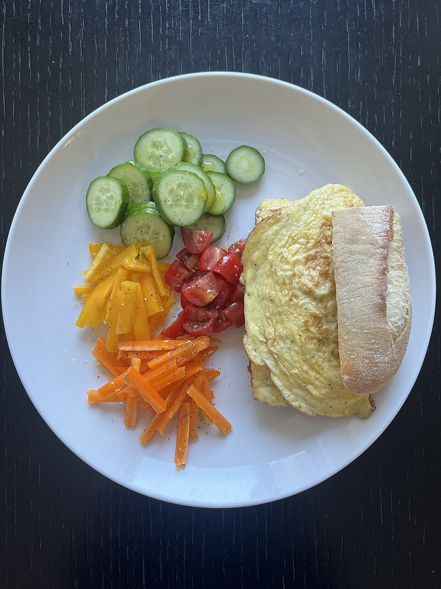
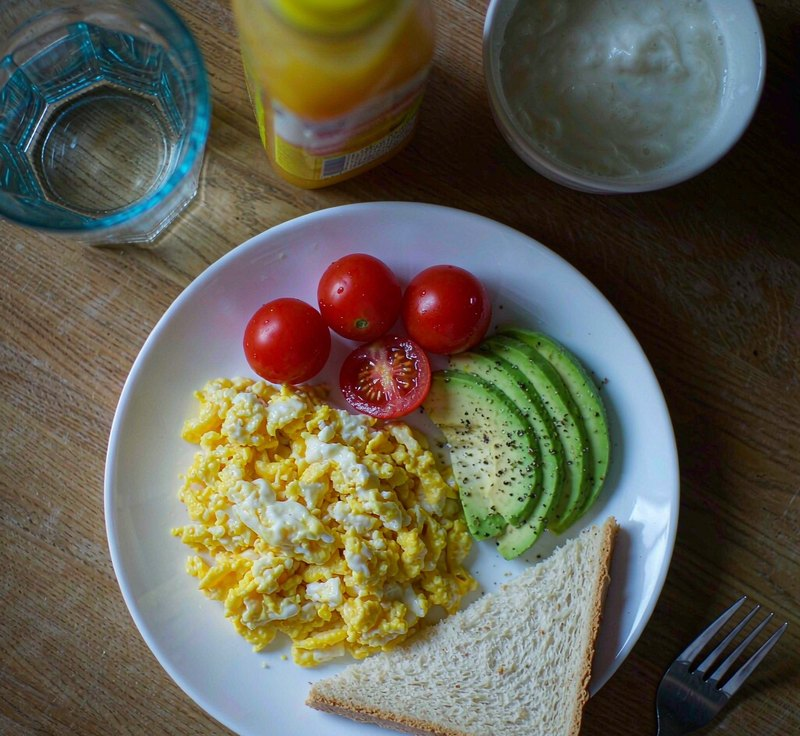
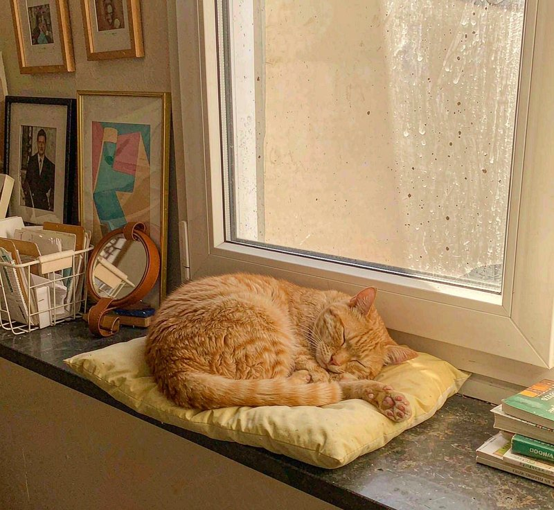
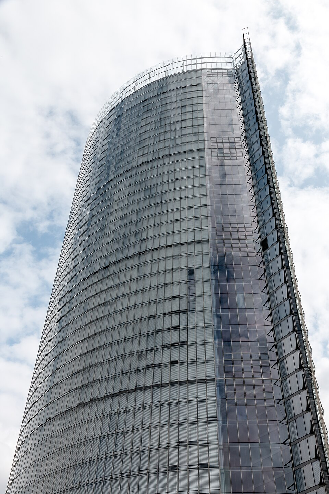

Five pairs. In each pair one photograph is real and one was generated. Hints below; answers are folded away so you can play first.
Play today’s challengeEdges give it away: where food meets plate, and whether crumbs look plausible.


Real photo: “Liat Portal for Foodie Disorder - Colorful Homemade Breakfast Plate.jpg” — HaJunkiyada, CC BY-SA 4.0, via Wikimedia Commons.
Count the toes and study the fur where it blends into the background.

Real photo: “Cat napping by the window (Unsplash).jpg” — Yanko Peyankov peyankov, CC0, via Wikimedia Commons.
Look at how the water meets the light — reflections are where generators slip.
Real photo: “Jokulsarlon lake, Iceland.jpg” — Kenny Muir, CC BY 2.0, via Wikimedia Commons.
Check the petal edges and the centre under close light.
Real photo: “Flower Macro 4 12 18 (253382759).jpeg” — Paul Zucker, CC BY 3.0, via Wikimedia Commons.
Scan the window grid — repeating patterns are a classic tell.

Real photo: “Bonn, Post-Tower -- 2017 -- 2136.jpg” — Dietmar Rabich, CC BY-SA 4.0, via Wikimedia Commons.
How to spot an AI-generated photo →
Part of OMC — Network · Compute Forum · AI Top

.jpg){kind=link}

.jpeg){kind=link}